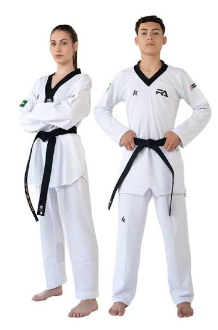
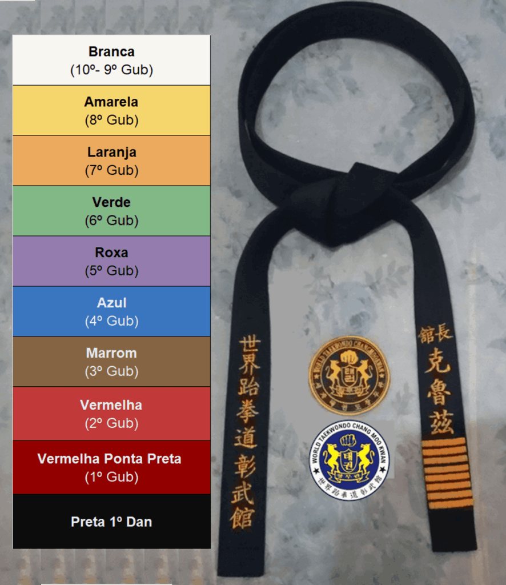

Luta — Taekwondo
O Taekwondo é uma arte marcial coreana que trabalha corpo e mente ao mesmo tempo. Nas aulas, os alunos aprendem golpes de perna e de mão, formas (sequências de movimentos) e noções de defesa pessoal, sempre com foco em disciplina, respeito e autocontrole.
Sobre a modalidade
As turmas são divididas por faixa e por nível de experiência, o que permite que iniciantes treinem com segurança enquanto os alunos mais antigos avançam no aperfeiçoamento técnico.

O que se aprende nas aulas
- Golpes de perna, de mão e combinações básicas.
- Formas (poomsae) e sequências de movimentos.
- Noções de defesa pessoal e esquiva.
- Condicionamento físico, equilíbrio e flexibilidade.
- Disciplina, respeito e trabalho em equipe.
Benefícios do Taekwondo
Mais do que golpes, o Taekwondo forma hábitos de disciplina e cuidado com o corpo que acompanham o aluno no dia a dia.
-
Disciplina e respeito
Rotina de treino, hierarquia de faixas e respeito aos colegas dentro e fora do tatame.
-
Defesa pessoal
Noções de esquiva e proteção que aumentam a confiança em situações do cotidiano.
-
Condicionamento e flexibilidade
Golpes e formas trabalham resistência, equilíbrio e amplitude de movimento.
-
Reflexos e concentração
Treinos de reação e foco que ajudam na atenção e no autocontrole.
Níveis e faixas
A progressão no Taekwondo é marcada pela troca de faixa. Cada nível tem um conteúdo próprio e uma avaliação ao final do ciclo.

| Nível | Faixa | Conteúdo principal |
|---|---|---|
| Iniciante | Branca e amarela | Postura, golpes básicos e primeiras formas. |
| Intermediário | Verde e azul | Combinações de golpes, defesa pessoal e formas intermediárias. |
| Avançado | Vermelha e preta | Formas avançadas, preparação para competições e didática. |